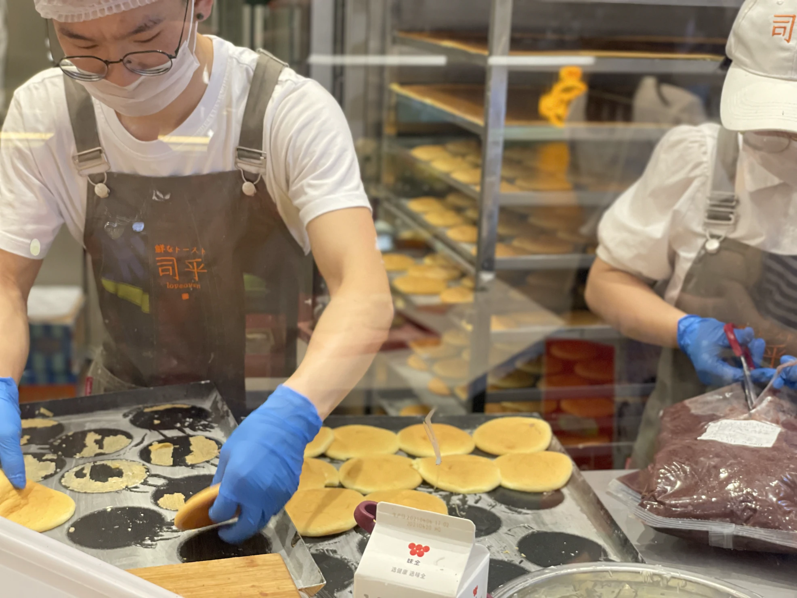
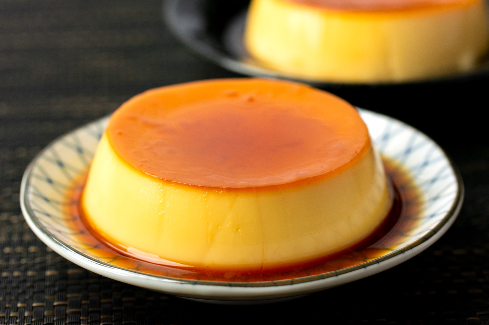
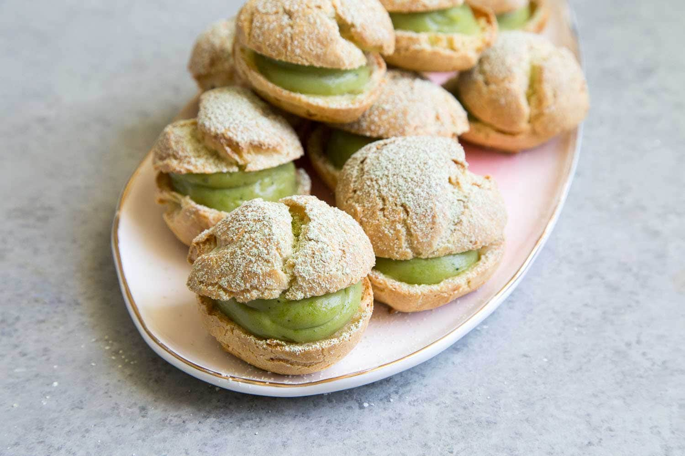

Japanese dessertsA. k. Zhibek

Japanese desserts don’t always get enough attention in my dessert world.Most Japanese sweets aren’t as sugary as what we typically eat.
You’ll find everything here from traditional Japanese desserts to Japanese pastries to Japanese pancakes!
Dango
1)Mitarashi Dango is a traditional Japanese rice dumpling that’s covered in a sweetened soy glaze. The dumplings are skewered on a bamboo stick, traditionally five to a skewer.
chewy dumplings brushed with the sweet glaze are irresistible and the perfect ending to a meal or for a snack with a cup of hot green tea.
Dorayaki (Japanese Red Bean Pancake)
2)Sweet, fluffy pancakes are “stuffed” with a sweet red bean filling to make a delightful, traditional Japanese dessert.
It’s very popular in Japan and is beloved by kids and adults alike. It’s perfect served with green tea for a wonderful ending to a meal.
Mochi Ice Cream

3)Mochi ice cream is a confection made from Japanese mochi (pounded sticky rice) with an ice cream filling.
It was invented by Japanese-American businesswoman and community activist Frances Hashimoto.
Purin (Japanese Caramel Custard Pudding)
4)“Purin” means “pudding” in Japanese. This version has two layers: a soft, smooth and creamy custard with a sweet caramel-like syrup with a slight hint of bitterness.
It can be made up to 3 days ahead making it perfect to serve at your next dinner party.
Matcha Cream Puffs
5)It’s a beautiful thing when two cuisines merge to create an entirely new dessert flavor.
These pretty little puffs are best served the same day they’re made, but don’t worry, they won’t last longer than that anyway!